His Life Story
Born in the rolling fields of San felipe Camaeines Sur, Tatay Oscar learned the value of
hard work before he could even properly hold a farming tool. His childhood was spent
under the warm Philippine sun, helping their family in the farm field tend to their small plot of land.
As a young man, he dedicated himself to farming and to escape in poverty, eventually expanding his family's
agricultural holdings through sheer determination and wise decisions. His hands knew
the soil and warm of the land, his heart understood the seasons, and his mind grasped the delicate balance
needed to nurture life from the earth.
When his children were are in the right age and have own family to be responsible,
and later when he took on the responsibility of raising
his grandchildren, Tatay oscar became known for his firm but loving discipline. He believed
that just as crops needed structure to grow properly, children needed guidance and boundaries
to flourish into responsible adults.
His grandchildren knew that their father would wake up at 4 AM to have coffee and listen to the radio.
By 5 AM, he would start getting ready to go to the farm and cook breakfast for his grandchildren.
He would leave for the farm around 5:30 AM and return home by 7 AM. At noon, he would go back to the farm
and then return home again by 3 PM.
Throughout his 73 years of life, he remained a pillar of strength for his community, sharing
his harvest with neighbors in need, cleaning the pathways of debris, and spending evenings
gathering fallen leaves to maintain cleanliness in his area here in Sitio Santiago.
Life Timeline
November 28, 1949
Birth & Early Life
Born in San felipe, into a farming family that taught him the sacred connection between land and life.
January 3, 1974
Marriage & Family
Married his beloved Violita Orolfo and began building the family that would become his greatest pride and joy.
1974-1977
Raising 2 Children
Devoted himself to raising 2 children with discipline, love, and the values of hard work.
1994 - 2006
Grandfather
Took on the responsibility of helping raise 4 grandchildren, becoming their guiding light and moral compass.
2025
Eternal Rest
Peacefully returned to the Lord, leaving behind a legacy of love, and the enduring values he planted in our hearts.
Photo Memories
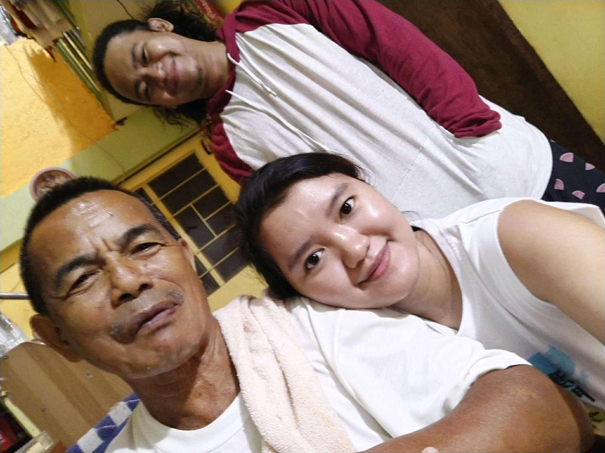
Tatay, Ate Ochie, and Kuya King
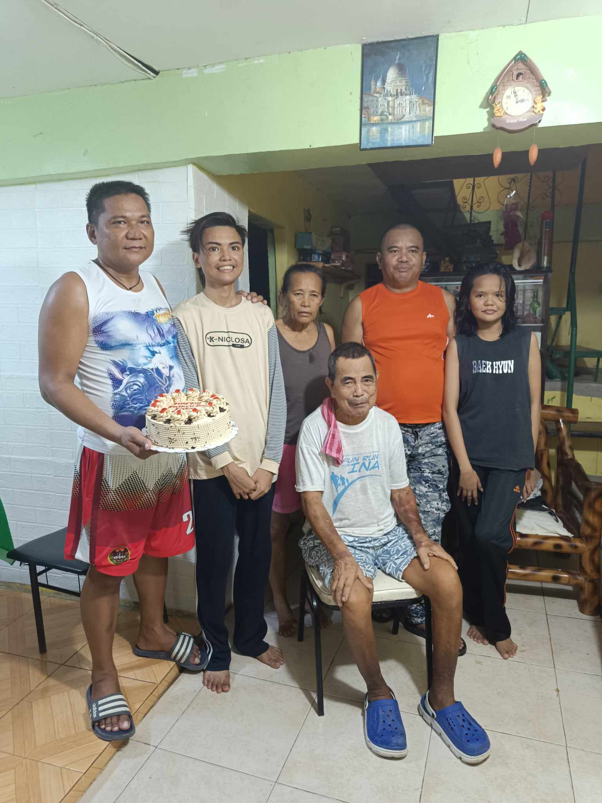
Tatay Birthday
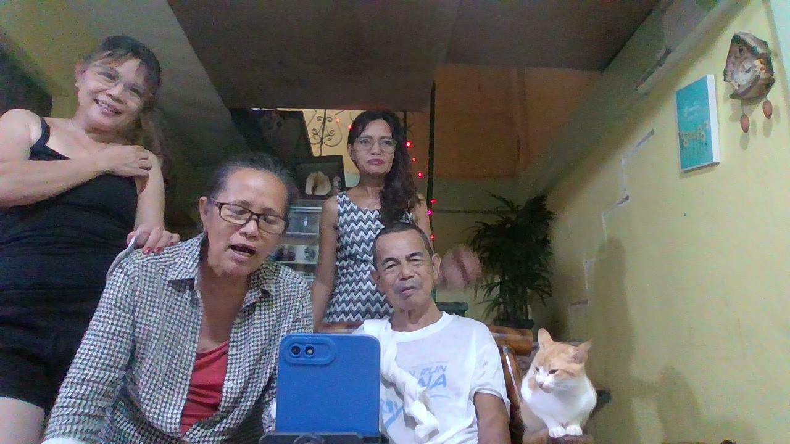
Christmass Celebration
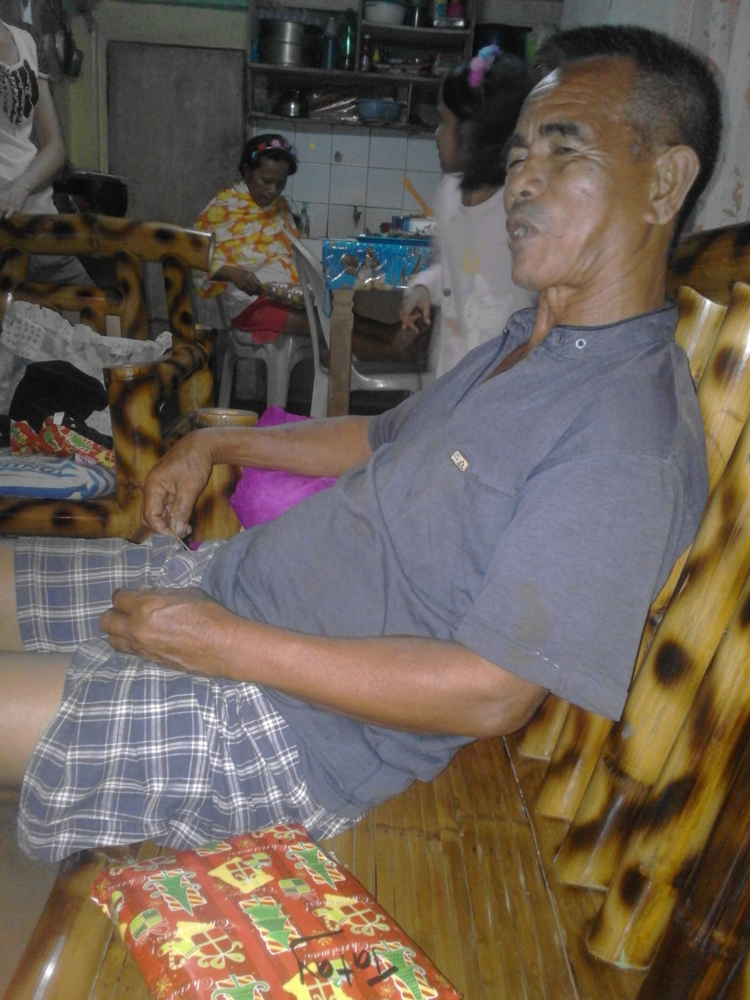
Christmass season
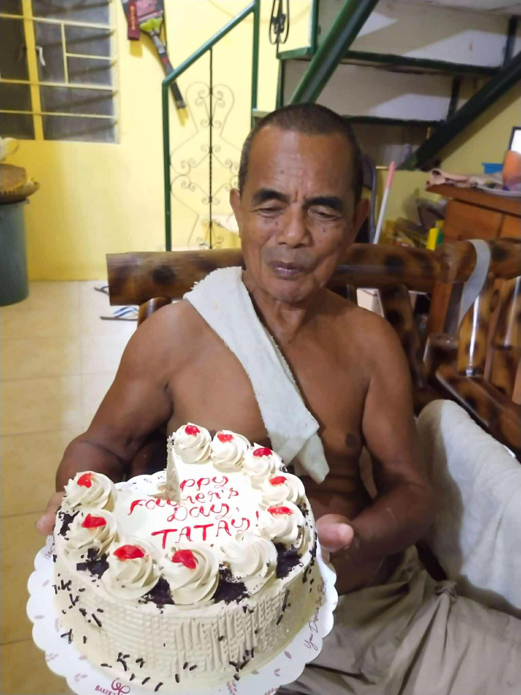
Tatay Birthday
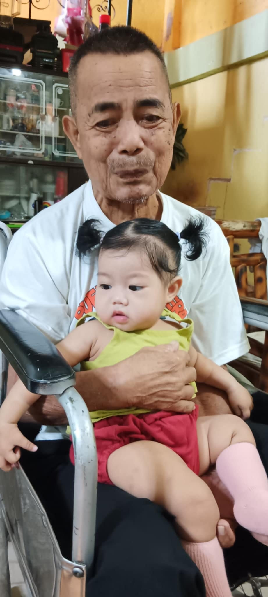
Little Bea
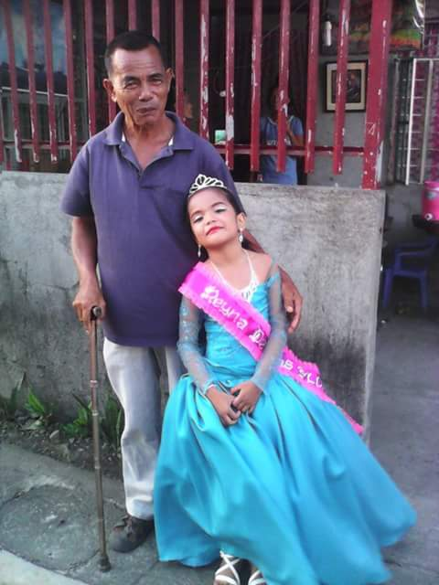
Baby Reyna Elena
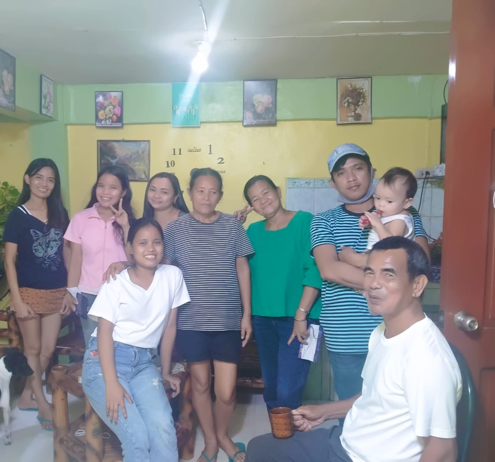
Nanay Family gathering
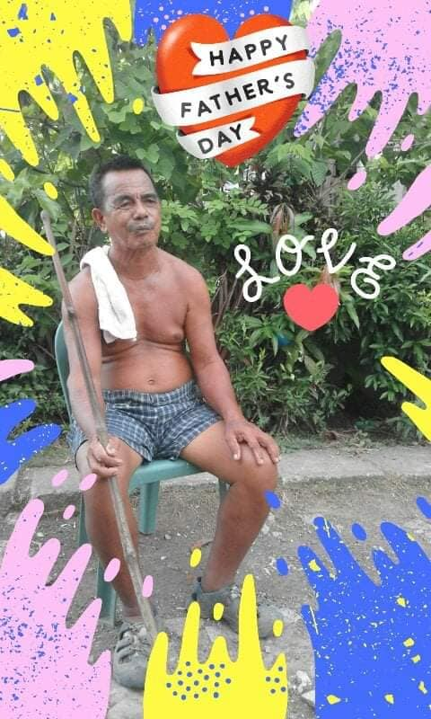
fathers Day
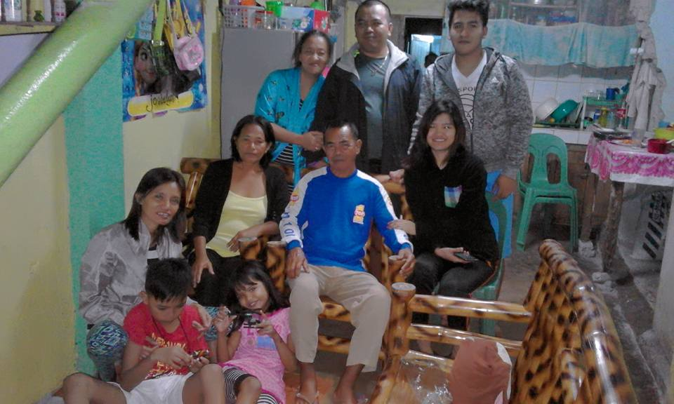
New Year Celebration
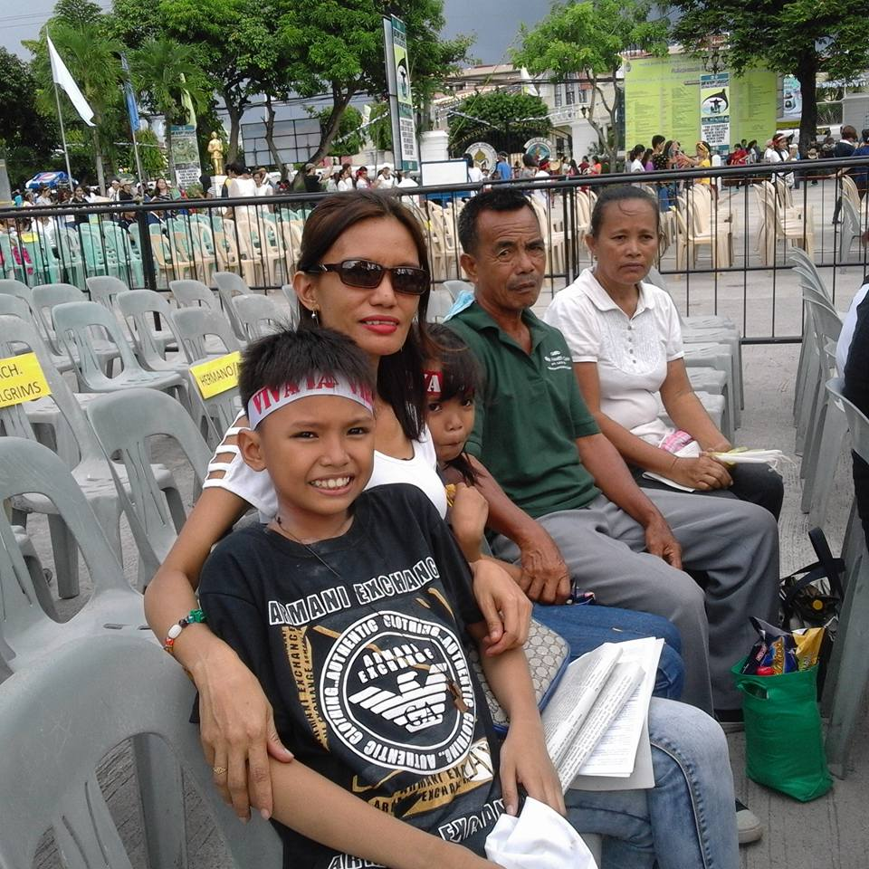
Traslation
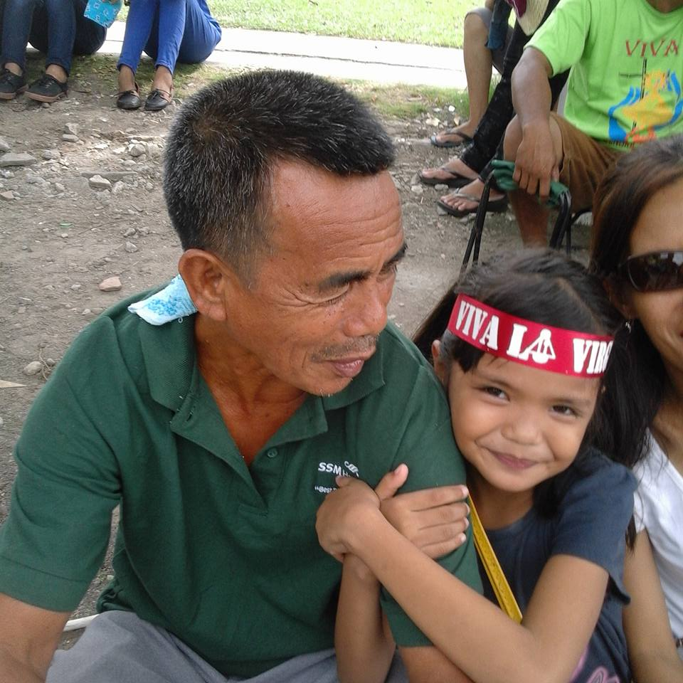
Traslation
×

Cherished Memories
"Tatay would wake us at 4 AM every morning. By 5, he was off to the farm, and breakfast would already be cooking.
'We were expected to rise with him as a sign of respect."
"Every year, Father would go to the farm to process the newly harvested rice, and we would end up with over 64 sacks of rice.
Those days at the farm were not just about harvesting rice they were lessons in responsibility and family togetherness."
"Whenever we made a mistake, Father would discipline us, teaching us how to respect our elders and honor our parents.
He always explained the importance of respect, patience and turning every correction into a valuable life lesson."
Achievements & Legacy
Successfully raised 2 children who became productive members of society
Helped raise and guide 4 grandchildren with love and discipline, supporting them to succeed in life
He was known as a good leader and a barangay watchman of his time, carrying out his duties properly
Shared his harvest generously with neighbors in need
Maintained the cleanliness of his neighborhood by clearing pathways and collecting fallen leaves daily
Started his days early, waking up at 4 AM to set a disciplined and hardworking
Worked tirelessly on the farm and be a great father and grandfather, teaching the value of hard work and dedication to his children and grandchildren
Family Tree
Tatay Oscar
& Nanay Violeta
& Nanay Violeta
His children
Zaldy Sambo ❤️ Rosalina Sambo
Joselita Orolfo ❤️ Christopher Lingo Ledesma
Grandchildren
Rezaldy Sambo
Rozelle Sambo ❤️ King Austria
Christopher Jho Ledesma
Josielyn Ledesma
Jax kreven Austria 👶 Great Grandchild
Tatay Sibling
Merlinda Devera
Raul Sambo
Sartunino sambo
Efren sambo
Raul Sambo
Service Information
Wake & Viewing
Date: September 20 - 27, 2025
Time: What ever You want to visit
Location: San felipe
San felipe, "Chapel"
Funeral Mass
Date: September 28, 2025
Time: 10:00 AM - 2:00
Location: San felipe , Chapel